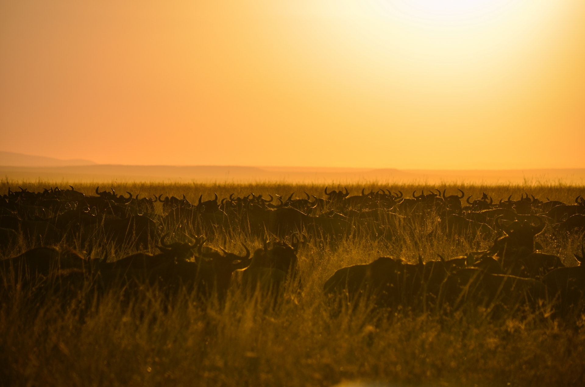

Health & Climate Tips
It is advisable to travel with a small medical kit that includes any basic remedies you may need, such as antacids, painkillers, anti-histamines and cold remedies.Vaccines commonly recommended for travellers to Africa include those against: Tetanus Diphtheria Polio Typhoid Hepatitis A Hepatitis B Yellow fever* Rabies Meningitis Malaria *Medical Certificate is required for entry into, or travel between, some African countries. Several of these vaccines require more than one dose, or take time to become effective. It is always best to seek advice on immunisation well in advance, if possible around 6 weeks before departure.
-

Raining Season
The relatively cool season, from late-June to October, gets much less rain. There's a second rainy season, the 'short rains', for a few weeks in November and December, followed roughly from mid-December to March by a dry season of hot, usually rainless, weather.
-

Winding Season
The winds determine the onset of Kenya's two rainy seasons, with the hot northeast monsoon or kaskazi blowing dry air in from the Persian Gulf from November to March/April and the warm, moist kusi monsoon blowing in from the southeast from April/May to October..
-

Summer Month In kenya
Visitors are spared the extreme, blistering temperatures found in other regions of Africa, or even other areas within Kenya. Summer months in Nairobi are December through March, when average highs are in the upper 70s and lows are in the mid- to upper-50s. Winter months (June through September) are a little cooler..
IMPORTANT NOTICE: REVISION OF VISA RATES
For those who will be arriving in Kenya on and after July 1st 2011, the new Visa will be as
follows:
Single Journey Visa (SJV)
Multiple Journey Visa (MJV)
Transit Visa (TV)
Referral Visa
Or the equivalent amount in Euros, GBP and Swiss Francs Kenya has three international
airports:
Jomo Kenyatta International Airpor in Nairobi
Moi International Airport in Mombasa
Eldoret International Airport
In Eldoret These airports service numerous international carriers including the national
airline
Kenya Airways.Kenya has good connections to destinations throughout Europe, the Asia- Pacific
region,
USA and Africa. Kenya can be accessed by road from Tanzania, Uganda, Ethiopia, Sudan and
Somalia.
Immigration should be processed at land border stations. Entry by sea is possible, and
immigration
should be processed at a port facility.